Стрелец
Ноябрь 23 - Декабрь 21
Вы можете снова оказаться в ситуации, когда были бы более уверенными в отношении общего плана, если бы больше его контролировали. Похоже, другие участники просто не знают того, что знаете Вы. Возможно, в Ваших глазах они не знают, что делают. Для Вас путь вперед ясен. Тем не менее, Вы видите ненужные отклонения от пути и слышите бесполезные оправдания. Приготовьтесь увидеть, как и почему Вы поступили мудро, сохранив определенную информацию и наблюдения при себе.